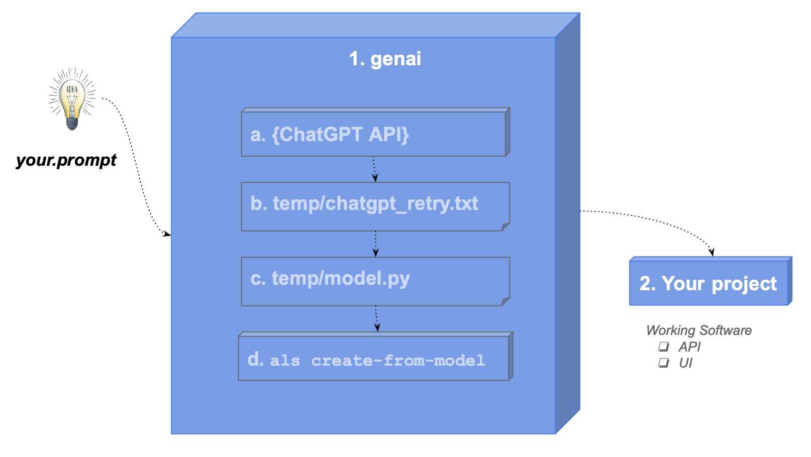
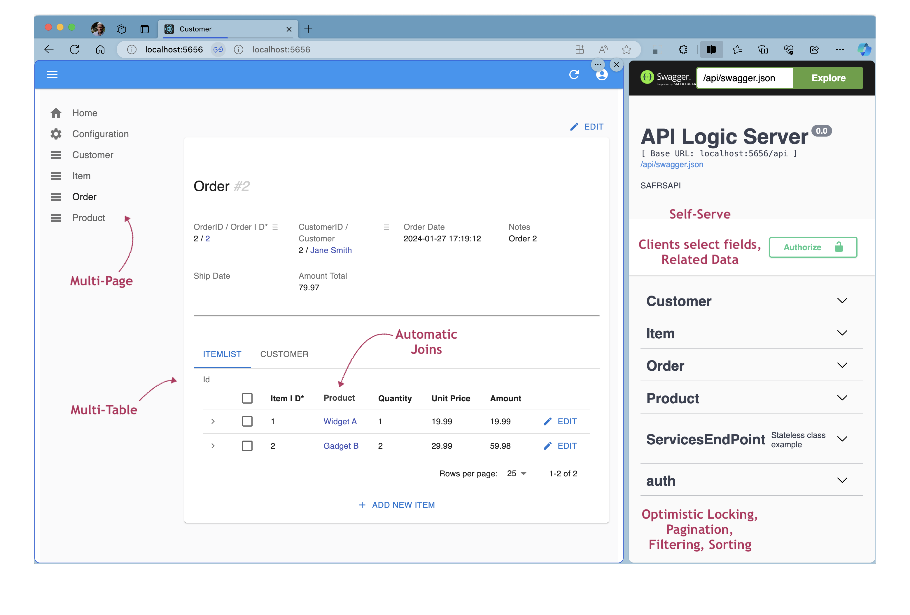
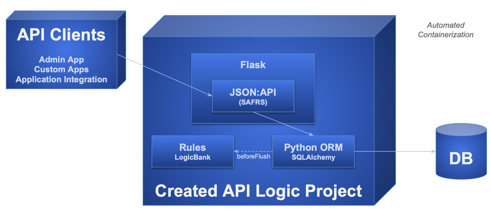
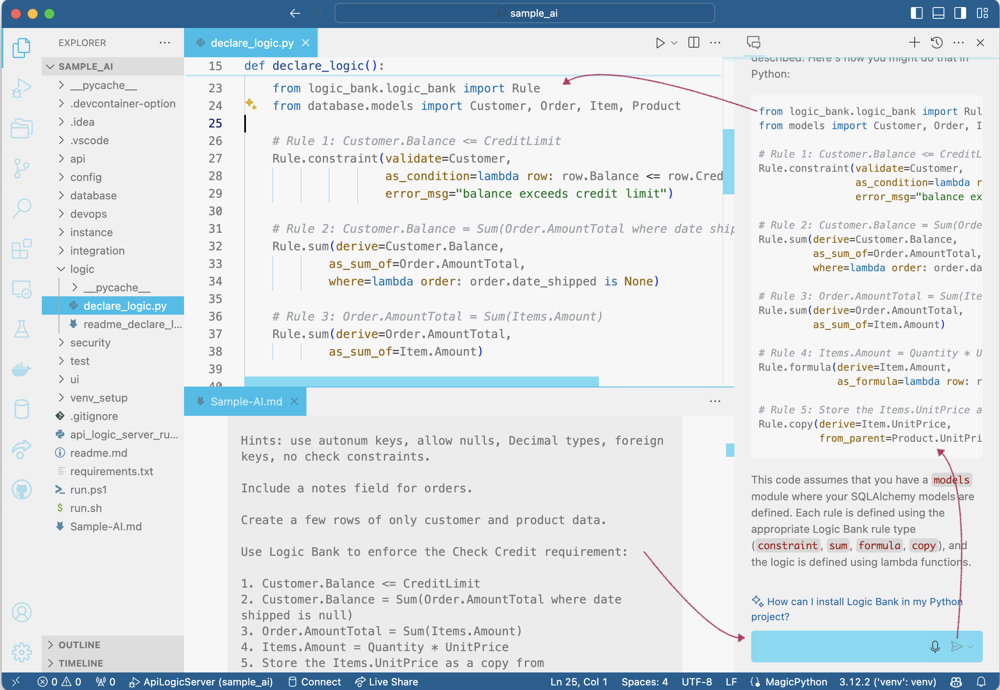
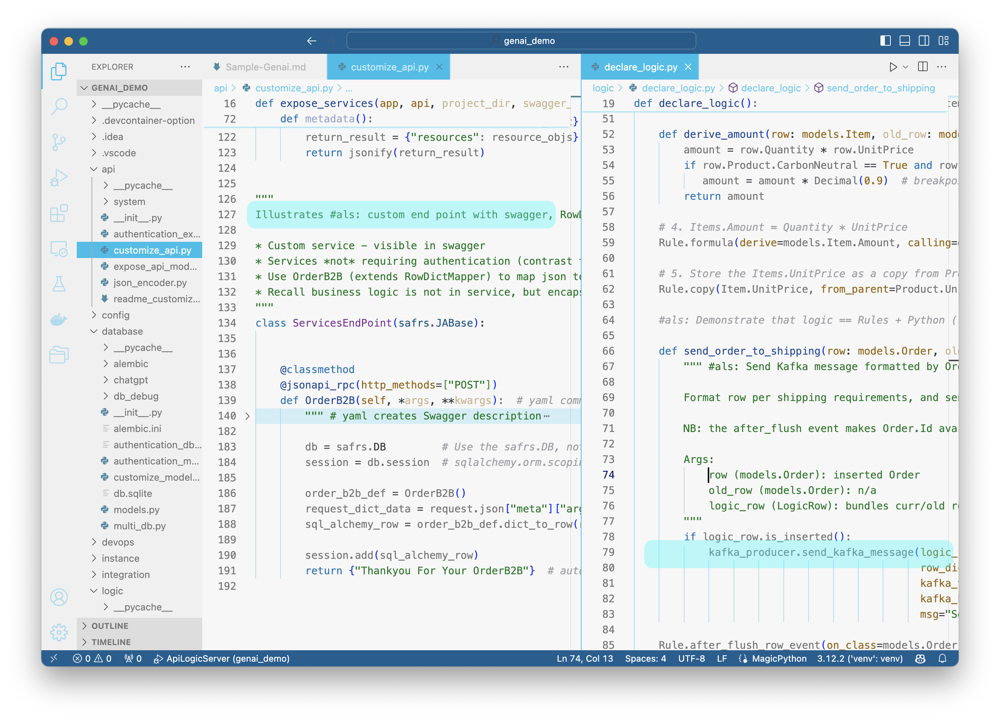

GenAI Microservice Automation
 TL;DR - GenAI leverages AI and Microservice Automation for 'hands-free' project creation
TL;DR - GenAI leverages AI and Microservice Automation for 'hands-free' project creation
API Logic Server uses ChatGPT APIs, to submit prompts and obtain data model class responses.
API Logic Server uses these to create a database and project, from a single genai command.
This document illustrates how to create, run and customize the genai_demo project.
Note: if you have already created the project, proceed to "What Just Happened?".
1. Description (or Database)
To create a microservice, identify an existing database, or provide a natural language "prompt" description. For example, here is the genai_demo.prompt file:
TL;DR - GenAI Prompt
Use SQLAlchemy to create a sqlite database named sample_ai.sqlite, with customers, orders, items and product
Hints: use autonum keys, allow nulls, Decimal types, foreign keys, no check constraints.
Include a notes field for orders.
Create a few rows of only customer and product data.
Enforce the Check Credit requirement (do not generate check constraints):
- Customer.Balance <= CreditLimit
- Customer.Balance = Sum(Order.AmountTotal where date shipped is null)
- Order.AmountTotal = Sum(Items.Amount)
- Items.Amount = Quantity * UnitPrice
- Store the Items.UnitPrice as a copy from Product.UnitPrice
2. GenAI Creation
You can explore genai_demo using the Manager. Optionally, you can sign-up for ChatGPT API and Copilot, or simulate the process as described below.
- If you have signed up for ChatGPT API and Copilot, this command will create and open a project called
genai_demofromgenai_demo.prompt:
als genai --using=genai_demo.prompt
- Or, if you have not signed up, you can simulate the process using a pre-installed response file:
als genai --using=genai_demo.prompt --gen-using-file=system/genai/temp/chatgpt_retry.txt
What Just Happened?
genai processing is shown below (internal steps denoted in grey):
-
You create your.prompt file, and invoke
als genai --using=your.prompt. genai then creates your database and project as follows:a. Submits your prompt to the
ChatGPT APIb. Writes the response to file, so you can correct and retry if anything goes wrong
c. Extracts model.py from the response
d. Invokes
als create-from-model, which creates the database and your project -
Your created project is opened in your IDE, ready to execute and customize

API/App Automation
API/App Automation means the created project is executable. To run:
- Press F5 to run
- Start your Browser to view:
- App Automation: the Admin App, and
- API Automation: JSON:API, with Swagger
- Stop the server when you are done (red box on VSCode Debugger panel)

It's a modern, 3-tiered architecture, using standard Python libraries:

3. Customize: Rules and Python
The development environment is also standard: your IDE, standard languages, standard libraries, standard source control, etc. You customize API Logic Project in two ways, both performed in your IDE:
-
Logic Automation: declare spreadsheet-like rules to address multi-table derivations and constraints. These constitute nearly half of a typical database-oriented system. Declarative rules are 40X more concise than procedural code.
-
Standard Python: e.g, to create a new custom endpoint, and send a Kafka message
Explore these below.
Logic Automation
To explore rules:
-
Open
logic/declare_logic.py -
Copy the comments to your Copilot window, starting with the line with GenAI:
-
Paste them into the Copilot Chat windows
-
Paste the generated code back into
logic/declare_logic.py. You will need to make a few small repairs:- change import models to import database.models, and
- change as_formula to as_expression

Standard Python, Libraries
To save time, issue the follow command to simulate changes you might make in your IDE, e.g., to create a new custom endpoint, and send a Kafka message.
als genai-cust

Try it out
Set a breakpoint in the code above, and:
- Start the Server (F5)
- Use the Admin app to alter the first Customer, first Order, first Item, and change the quantity to 11111
- Observe the error message, from the rules.
- To test the new endpoint, use Swagger (ServicesEndPoint > POST /ServicesEndPoint/OrderB2B).
- Observe the swagger response - "Sending Order to Shipping sends:".
Note: Kafka is not activated in this example. To explore a running Tutorial for application integration with running Kafka, click here.
4. Deployment: Containers, Cloud
One of the best ways to de-risk projects is to verify the sponsors are in sync with what is happening. This is best addressed with working software, which often occurs late in project development. Surprises here can result in considerable rework... and frustrations.
GenAI Automation produces working software, now, so you can find misunderstandings before investing serious effort ("fail fast"). To expose the working software, it's often desirable to deploy to the cloud so business users can run it.
API Logic Server creates the devops directory, which scripts to containerize your project, and deploy it to Azure. For more information, see DevOps Automation.
Appendices
GenAI Restart Procedures
AI results are not consistent, so the created model file may need corrections. You can find it at system/genai/temp/model.py. You can correct the model file, and then run:
als create --project-name=genai_demo --from-model=system/genai/temp/model.py --db-url=sqlite
Or, correct the chatgpt response, and
als genai --using=genai_demo.prompt --gen-using-file=system/genai/temp/chatgpt_retry.txt
We have seen failures such as:
- duplicate definition of
DECIMAL(we hand-fix the response to fix this) - unclosed parentheses
- data type errors in test data creation
- wrong engine import: from logic_bank import Engine, constraint
- bad test data creation: with Engine() as engine...
- Bad load code (no session)
- missing datetime import
- relationship property errors ("mapper has no property...")
GenAI Using Postgresql
The above examples use sqlite, since it requires no install. The GenAI process works for other database, such as Postgresql.
You can test this as follows:
- Use our docker image
- And:
als create --project-name=genai_demo_pg.prompt --db-url=postgresql://postgres:p@localhost/genai_demo
Provisos:
- You have to create the database first